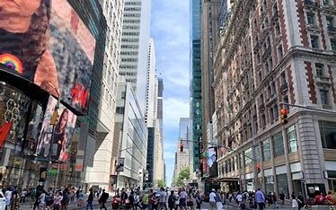
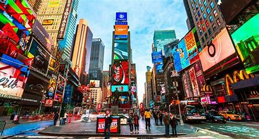
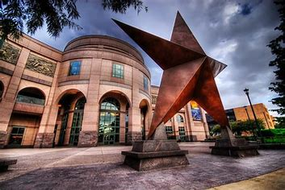

Sobre Nova York
Nova York é uma das cidades mais icônicas do mundo, conhecida por seus arranha-céus impressionantes, diversidade cultural incomparável e energia única. A cidade que nunca dorme oferece experiências inesquecíveis em cada esquina, desde arte e cultura até gastronomia e entretenimento.
Principais Regiões
- Manhattan - Coração financeiro e cultural
- Brooklyn - Bairro histórico e artístico
- Queens - O borough mais diversificado
- Bronx - Berço do hip-hop
- Staten Island - A ilha mais tranquila



Atrações Principais
| Atração | Localização | Descrição |
|---|---|---|
| Estátua da Liberdade | Liberty Island | Símbolo da liberdade e democracia |
| Central Park | Manhattan | Maior parque urbano da cidade |
| Times Square | Manhattan | Centro de entretenimento e publicidade |
| Empire State | Manhattan | Arranha-céu histórico com vista panorâmica |
O que fazer em Nova York
- Assistir a um espetáculo na Broadway
- Visitar os museus mundialmente famosos
- Fazer um piquenique no Central Park
- Explorar os diferentes bairros étnicos
- Apreciar a vista do Top of the Rock
Curiosidades
- Mais de 800 idiomas são falados em Nova York
- O metrô funciona 24 horas por dia
- Central Park é maior que o principado de Mônaco
- A cidade tem mais de 4.000 food trucks